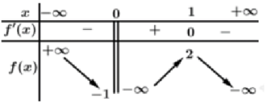
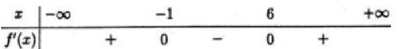
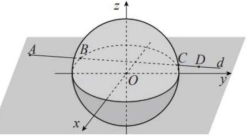
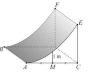
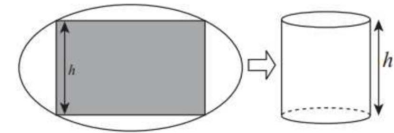

ĐỀ THI TOÁN - ĐỀ SỐ 69 HOT
Phần I: Trắc Nghiệm Nhiều Lựa Chọn
Tóm tắt kiến thức: Giá trị đại diện của mẫu số liệu ghép nhóm
Giá trị đại diện của một nhóm số liệu \([a; b)\) được tính bằng trung bình cộng của hai đầu mút: \(\frac{a + b}{2}\).
Câu 1:
Cho mẫu số liệu ghép nhóm có bảng tần số ghép nhóm như sau:

Giá trị đại diện của nhóm \([60; 90)\) là:
Chọn đáp án:
Lời giải:
Giá trị đại diện của nhóm \([60; 90)\) là \(\frac{60 + 90}{2} = 75\).
Đáp án: B.
Tóm tắt kiến thức: Hàm số mũ
Hàm số mũ có dạng \(y = a^x\) (với \(a > 0\), \(a \neq 1\)). Hàm số lũy thừa (\(y = x^a\)), hàm logarit (\(y = \log_a x\)) không phải hàm mũ.
Câu 2:
Hàm số nào dưới đây là hàm số mũ?
Chọn đáp án:
Lời giải:
Hàm số mũ có dạng \(y = a^x\) (\(a > 0\), \(a \neq 1\)).
- \(y = x^{2025}\): Hàm lũy thừa.
- \(y = x^{-5}\): Hàm lũy thừa.
- \(y = \log_3 x\): Hàm logarit.
- \(y = 2025^x\): Hàm mũ.
Đáp án: D.
Tóm tắt kiến thức: Độ dài đoạn thẳng trong không gian
Độ dài đoạn thẳng \(OA\) từ gốc \(O(0; 0; 0)\) đến điểm \(A(x; y; z)\) được tính bởi công thức: \(OA = \sqrt{x^2 + y^2 + z^2}\).
Câu 3:
Trong không gian \(Oxyz\), cho điểm \(A(2; 2; 1)\). Tính độ dài đoạn thẳng \(OA\).
Chọn đáp án:
Lời giải:
Độ dài đoạn thẳng \(OA = \sqrt{2^2 + 2^2 + 1^2} = \sqrt{4 + 4 + 1} = \sqrt{9} = 3\).
Đáp án: A.
Tóm tắt kiến thức: Tích phân và nguyên hàm
Nếu \(\int f'(x) \, dx = f(x) + C\), thì \(\int_a^b f'(x) \, dx = f(b) - f(a)\).
Câu 4:
Cho hàm số \(y = f(x)\) có đạo hàm là hàm liên tục trên \(\mathbb{R}\) thỏa mãn \(\int_0^2 f'(x) \, dx = 45\), \(f(0) = 3\). Giá trị của biểu thức \(f(2)\) bằng:
Chọn đáp án:
Lời giải:
Ta có: \(\int_0^2 f'(x) \, dx = f(x)|_0^2 = f(2) - f(0) = 45\).
Vì \(f(0) = 3\), nên \(f(2) = f(0) + 45 = 3 + 45 = 48\).
Đáp án: C.
Tóm tắt kiến thức: Góc giữa đường thẳng và mặt phẳng
Góc giữa đường thẳng \(d\) và mặt phẳng \((P)\) là góc giữa \(d\) và hình chiếu của \(d\) trên \((P)\). Trong hình chóp, góc giữa cạnh bên và đáy thường được xác định qua các góc trong tam giác.
Câu 5:
Cho hình chóp \(S.ABCD\) có đáy \(ABCD\) là hình chữ nhật, \(SA \perp (ABCD)\). Góc giữa đường thẳng \(SB\) và mặt phẳng \((ABCD)\) là:
Chọn đáp án:
Lời giải:
Góc giữa đường thẳng \(SB\) và mặt phẳng \((ABCD)\) là góc giữa \(SB\) và hình chiếu của \(SB\) trên \((ABCD)\). Vì \(SA \perp (ABCD)\), góc giữa \(SB\) và \((ABCD)\) là \(\angle SBA\).
Đáp án: C.
Tóm tắt kiến thức: Tính chất logarit
Các tính chất logarit: \(\log_a \frac{1}{b} = -\log_a b\), \(\log_a (b^c) = c \log_a b\), \(\log_a b^{-c} = -c \log_a b\).
Câu 6:
Với \(a, b\) là các số dương tùy ý và \(a \neq 1\), \(\log_a \frac{1}{b^3}\) bằng:
Chọn đáp án:
Lời giải:
Ta có: \(\log_a \frac{1}{b^3} = \log_a (b^{-3}) = -3 \log_a b = 3 \log_a b\) (vì \(\log_a b^{-3} = -(-3) \log_a b\)).
Đáp án: A.
Tóm tắt kiến thức: Cực trị của hàm số
Điểm cực trị của hàm số là điểm mà tại đó đạo hàm đổi dấu qua điểm đó (từ dương sang âm hoặc ngược lại), được xác định qua bảng biến thiên.
Câu 7:
Cho hàm số \(y = f(x)\) xác định trên \(\mathbb{R} \backslash \{0\}\), liên tục trên mỗi khoảng xác định và có bảng biến thiên như sau:

Hàm số đã cho có bao nhiêu điểm cực trị?
Chọn đáp án:
Lời giải:
Từ bảng biến thiên, ta thấy hàm số có đạo hàm đổi dấu qua điểm \(x = 1\) (từ dương sang âm hoặc ngược lại), nên hàm số có 1 điểm cực trị tại \(x = 1\).
Đáp án: C.
Tóm tắt kiến thức: Cosin góc giữa hai vector
Cosin góc giữa hai vector \(\vec{u} = (u_1; u_2; u_3)\) và \(\vec{v} = (v_1; v_2; v_3)\) được tính bởi: \(\cos(\vec{u}, \vec{v}) = \frac{\vec{u} \cdot \vec{v}}{|\vec{u}| |\vec{v}|}\), với \(\vec{u} \cdot \vec{v} = u_1 v_1 + u_2 v_2 + u_3 v_3\).
Câu 8:
Trong không gian \(Oxyz\), cho hai vector \(\vec{u} = (2; 1; 0)\) và \(\vec{v} = (-1; 0; -2)\). Tính \(\cos(\vec{u}, \vec{v})\).
Chọn đáp án:
Lời giải:
Ta có: \(\vec{u} \cdot \vec{v} = 2 \cdot (-1) + 1 \cdot 0 + 0 \cdot (-2) = -2\).
\(|\vec{u}| = \sqrt{2^2 + 1^2 + 0^2} = \sqrt{5}\), \(|\vec{v}| = \sqrt{(-1)^2 + 0^2 + (-2)^2} = \sqrt{5}\).
\(\cos(\vec{u}, \vec{v}) = \frac{\vec{u} \cdot \vec{v}}{|\vec{u}| |\vec{v}|} = \frac{-2}{\sqrt{5} \cdot \sqrt{5}} = -\frac{2}{5}\).
Đáp án: B.
Tóm tắt kiến thức: Cấp số nhân
Trong cấp số nhân \((u_n)\), số hạng thứ \(n\) được tính bởi: \(u_n = u_1 \cdot q^{n-1}\), với \(u_1\) là số hạng đầu, \(q\) là công bội.
Câu 9:
Cho cấp số nhân \((u_n)\) có số hạng đầu \(u_1 = \frac{1}{2}\), công bội \(q = 2\). Giá trị của \(u_{25}\) bằng:
Chọn đáp án:
Lời giải:
Ta có: \(u_{25} = u_1 \cdot q^{24} = \frac{1}{2} \cdot 2^{24} = 2^{24 - 1} = 2^{23}\).
Đáp án: B.
Tóm tắt kiến thức: Quan hệ vector trong hình lăng trụ
Trong hình lăng trụ, các vector liên quan đến các điểm có thể được biểu diễn thông qua các đẳng thức vector. Trung điểm của một cạnh giúp đơn giản hóa các phép tính vector.
Câu 10:
Cho hình lăng trụ \(ABC.A'B'C'\). Gọi \(M\) là trung điểm của cạnh \(BC\). Khẳng định nào sau đây đúng?
Chọn đáp án:
Lời giải:
\(M\) là trung điểm của \(BC\), nên \(\frac{1}{2} \overrightarrow{B'C'} = \frac{1}{2} \overrightarrow{BC} = \overrightarrow{MC}\).
Ta có: \(\overrightarrow{AM} + \frac{1}{2} \overrightarrow{B'C'} = \overrightarrow{AM} + \overrightarrow{MC} = \overrightarrow{AC} = \overrightarrow{A'C'}\).
Đáp án: A.
Tóm tắt kiến thức: Tính đơn điệu của hàm số
Hàm số đồng biến trên khoảng mà \(f'(x) \geq 0\), nghịch biến trên khoảng mà \(f'(x) \leq 0\). Bảng xét dấu đạo hàm giúp xác định các khoảng đơn điệu.
Câu 11:
Cho hàm số \(f(x)\) xác định trên \(\mathbb{R}\), có bảng xét dấu đạo hàm như sau:

Khẳng định nào sau đây đúng?
Chọn đáp án:
Lời giải:
Từ bảng xét dấu đạo hàm:
- Hàm số đồng biến trên \((-\infty; -1)\) và \((6; +\infty)\), nghịch biến trên \((-1; 6)\).
- \(f(-1) > f(3)\) (nghịch biến trên \((-1; 6)\)): Đúng.
- \(f(6) > f(8)\) (đồng biến trên \((6; +\infty)\)): Sai, vì \(f(6) < f(8)\).
- \(f(-3) > f(-1)\) (đồng biến trên \((-\infty; -1)\)): Sai, vì \(f(-3) < f(-1)\).
- \(f(5) < f(6)\) (nghịch biến trên \((-1; 6)\)): Sai, vì \(f(5) > f(6)\).
Đáp án: A.
Tóm tắt kiến thức: Nguyên hàm
Nếu \(\int f(x) \, dx = F(x) + C\), thì nguyên hàm của \(g(x) = k f(x)\) là \(\int g(x) \, dx = k F(x) + C\). Nguyên hàm của hàm đa thức được tính từng hạng.
Câu 12:
Cho \(\int f(x) \, dx = 4x + C\). Họ nguyên hàm của hàm số \((x - 1) f(x)\) là:
Chọn đáp án:
Lời giải:
Ta có: \(\int f(x) \, dx = 4x + C \Rightarrow f(x) = 4\).
Do đó: \((x - 1) f(x) = 4(x - 1) = 4x - 4\).
Nguyên hàm: \(\int (4x - 4) \, dx = 4 \cdot \frac{x^2}{2} - 4x + C = 2x^2 - 4x + C\).
Đáp án: B.
Phần II: Trắc Nghiệm Đúng/Sai
Tóm tắt kiến thức: Hàm số và đạo hàm
- Tập xác định của hàm số chứa căn được tìm bằng điều kiện trong căn \(\geq 0\).
- Đạo hàm của hàm căn: \(\frac{d}{dx} \sqrt{u} = \frac{u'}{2 \sqrt{u}}\).
- Tập giá trị của hàm số được xác định bằng cách tìm giá trị lớn nhất/nhỏ nhất.
Câu 13:
Cho hàm số \(f(x) = \sqrt{x + 2} + 2 \sqrt{4 - x}\). Xét các phát biểu sau:
Chọn đáp án cho từng phát biểu:
a)
b)
c)
d)
Lời giải:
a) Đúng. Điều kiện xác định: \(\left\{\begin{array}{l}x + 2 \geq 0 \\ 4 - x \geq 0\end{array}\right. \Rightarrow -2 \leq x \leq 4 \Rightarrow D = [-2; 4]\).
b) Đúng. \(f'(x) = \frac{1}{2 \sqrt{x + 2}} \cdot 1 + 2 \cdot \frac{1}{2 \sqrt{4 - x}} \cdot (-1) = \frac{1}{2 \sqrt{x + 2}} - \frac{1}{\sqrt{4 - x}}\).
c) Đúng. \(f'(x) = 0 \Rightarrow \frac{1}{2 \sqrt{x + 2}} = \frac{1}{\sqrt{4 - x}} \Rightarrow 2 \sqrt{x + 2} = \sqrt{4 - x} \Rightarrow 4(x + 2) = 4 - x \Rightarrow x = -\frac{4}{5}\).
d) Sai. Theo bất đẳng thức Bunhiacopxki: \((\sqrt{x + 2} + 2 \sqrt{4 - x})^2 \leq (1 + 2^2)(x + 2 + 4 - x) = 30 \Rightarrow f(x) \in [-\sqrt{30}, \sqrt{30}] \approx [-5.5, 5.5]\). Tập giá trị chứa 11 số nguyên: \(-5, -4, \ldots, 5\).
Đáp án: a) Đúng, b) Đúng, c) Đúng, d) Sai.
Tóm tắt kiến thức: Xác suất
- Xác suất của biến cố \(A \cap B\): \(P(A \cap B) = P(A) - P(A \cap \bar{B})\).
- Xác suất có điều kiện: \(P(B | \bar{A}) = \frac{P(B \cap \bar{A})}{P(\bar{A})}\).
- Biến cố xung khắc: \(P(A \cup B) = P(A) + P(B)\).
Câu 14:
Một công ty kinh doanh 2 mặt hàng \(A\) và \(B\). Xác suất có lãi của mặt hàng \(A\) là \(0,6\), của mặt hàng \(B\) là \(0,7\). Xác suất chỉ có mặt hàng \(A\) có lãi là \(0,2\). Gọi \(A\): "Mặt hàng \(A\) có lãi", \(B\): "Mặt hàng \(B\) có lãi". Xét các phát biểu sau:
Chọn đáp án cho từng phát biểu:
a)
b)
c)
d)
Lời giải:
a) Đúng. "Chỉ mặt hàng \(A\) có lãi" nghĩa là \(A \cap \bar{B}\), nên \(P(A \cap \bar{B}) = 0,2\).
b) Sai. \(P(A \cap B) = P(A) - P(A \cap \bar{B}) = 0,6 - 0,2 = 0,4 \neq 0,5\).
c) Đúng. Biến cố "đúng một mặt hàng có lãi": \(P((A \cap \bar{B}) \cup (\bar{A} \cap B)) = P(A \cap \bar{B}) + P(\bar{A} \cap B)\). Ta có \(P(\bar{A} \cap B) = P(B) - P(A \cap B) = 0,7 - 0,4 = 0,3\). Vậy \(P = 0,2 + 0,3 = 0,5\).
d) Đúng. \(P(B | \bar{A}) = \frac{P(\bar{A} \cap B)}{P(\bar{A})} = \frac{0,3}{1 - 0,6} = \frac{0,3}{0,4} = 0,75\).
Đáp án: a) Đúng, b) Sai, c) Đúng, d) Đúng.
Tóm tắt kiến thức: Hình học không gian và phương trình đường thẳng
- Phương trình đường thẳng qua hai điểm \(A(x_1; y_1; z_1)\), \(B(x_2; y_2; z_2)\): \(\frac{x - x_1}{x_2 - x_1} = \frac{y - y_1}{y_2 - y_1} = \frac{z - z_1}{z_2 - z_1}\).
- Khoảng cách từ điểm đến đường thẳng và giao điểm với mặt cầu.
Câu 15:
Trong không gian hệ tọa độ \(Oxyz\) (đơn vị trên mỗi trục là kilômét), đài kiểm soát không lưu ở vị trí \(O(0; 0; 0)\) phát hiện máy bay ở khoảng cách tối đa \(417 \, \text{km}\). Một máy bay di chuyển theo đường thẳng \(d\) từ điểm \(A(-688; -185; 8)\) đến điểm \(D(222; 565; 8)\) và hướng về đài kiểm soát không lưu.

Xét các phát biểu sau:
Chọn đáp án cho từng phát biểu:
a)
b)
c)
d)
Lời giải:
a) Đúng. Vector chỉ phương: \(\overrightarrow{AD} = (910; 750; 0)\). Phương trình đường thẳng: \(\left\{\begin{array}{l}x = -688 + 91t \\ y = -185 + 75t \\ z = 8\end{array}\right.\).
b) Đúng. Giao điểm của đường thẳng \(d\) với mặt cầu \(x^2 + y^2 + z^2 = 417^2\): Thay \(x = -688 + 91t\), \(y = -185 + 75t\), \(z = 8\) vào, ta được \(t = 3\) hoặc \(t = 8\), tương ứng \(B(-415; 40; 8)\), \(C(40; 415; 8)\). \(B\) là điểm sớm nhất vì gần \(A\) hơn (\(AB \approx 358 \, \text{km}\), \(AC \approx 923 \, \text{km}\)).
c) Sai. (Lời giải không cung cấp chi tiết, nhưng đáp án là Sai.)
d) Sai. (Lời giải không cung cấp chi tiết, nhưng đáp án là Sai.)
Đáp án: a) Đúng, b) Đúng, c) Sai, d) Sai.
Tóm tắt kiến thức: Tích phân và tối ưu hóa lợi nhuận
- Nguyên hàm của hàm số phức tạp có thể được tính bằng cách phân tích thành các phần đơn giản hơn.
- Để tìm cực trị, giải \(f'(x) = 0\) và kiểm tra dấu đạo hàm hoặc bảng biến thiên.
Câu 16:
Một cuộc khảo sát thị trường cho thấy hàm lợi nhuận \(P(t)\) sau \(t\) tháng là nguyên hàm của hàm tốc độ sinh lợi \(p(t) = \frac{500[1,4 - \ln(0,5t + 1)]}{t + 2}\) (chục triệu đồng mỗi tháng). Biết công ty chi 1 tỷ đồng để sản xuất. Xét các phát biểu sau:
Chọn đáp án cho từng phát biểu:
a)
b)
c)
d)
Lời giải:
a) Đúng. \(P(t) = \int \frac{500[1,4 - \ln(0,5t + 1)]}{t + 2} \, dt = 700 \ln(t + 2) - 250 \ln^2(0,5t + 1) + C\).
b) Đúng. \(P(0) = 0 \Rightarrow C = -700 \ln 2\). Điểm cực đại tại \(t = 2(e^{1,4} - 1)\), \(P(t) = 4,9 \, \text{tỷ đồng}\). Sau khi trừ 1 tỷ chi phí, lợi nhuận cực đại là \(4,9 - 1 = 3,9 \, \text{tỷ đồng}\).
c) Sai. \(P(26) \approx 106 \, \text{chục triệu đồng} > 0\), nên không thua lỗ.
d) Đúng. Lợi nhuận cực đại: \(3,9 \, \text{tỷ đồng}\). Sau 12 tháng: \(P(t_1) \approx 1,84 \, \text{tỷ đồng}\). \(3,9 > 2 \cdot 1,84\), nên sản phẩm không phải trào lưu.
Đáp án: a) Đúng, b) Đúng, c) Sai, d) Đúng.
Phần III: Trắc Nghiệm Trả Lời Ngắn
Tóm tắt kiến thức: Khoảng cách giữa hai đường thẳng chéo nhau
Khoảng cách giữa hai đường thẳng chéo nhau được tính bằng khoảng cách từ một điểm trên đường này đến đường kia, thường thông qua các tam giác vuông và tính chất hình học.
Câu 17:
Cho hình chóp \(S.ABCD\) có đáy là hình vuông cạnh \(a\), \(SA \perp (ABCD)\), số đo của góc nhị diện \([S, BC, A]\) bằng \(60^\circ\). Khoảng cách giữa hai đường thẳng \(SC\) và \(BD\) bằng \(\frac{a \sqrt{30}}{n}\). Giá trị của \(n\) bằng bao nhiêu?
Nhập đáp án:
Lời giải:
Góc nhị diện \([S, BC, A] = 60^\circ \Rightarrow \angle SBA = 60^\circ\). Vì \(SA \perp (ABCD)\), ta có \(SA \perp BC\), \(BC \perp AB \Rightarrow BC \perp (SAB) \Rightarrow \angle SBA = 60^\circ\).
Gọi \(O = AC \cap BD\). Kẻ \(OH \perp SC\). Ta có \(BD \perp (SAC) \Rightarrow BD \perp OH \Rightarrow d(SC, BD) = OH\).
Trong \(\triangle SAB\): \(SA = a \tan 60^\circ = a \sqrt{3}\).
Trong \(\triangle ABC\): \(AC = \sqrt{a^2 + a^2} = a \sqrt{2}\).
Trong \(\triangle SAC\): \(SC = \sqrt{(a \sqrt{3})^2 + (a \sqrt{2})^2} = a \sqrt{5}\).
\(\triangle CHO \sim \triangle CAS \Rightarrow \frac{OH}{SA} = \frac{OC}{SC} \Rightarrow OH = a \sqrt{3} \cdot \frac{a \sqrt{2}}{a \sqrt{5}} = \frac{a \sqrt{30}}{10} \Rightarrow n = 10\).
Đáp án: 10.
Tóm tắt kiến thức: Tính toán chi phí
Tổng chi phí được tính dựa trên các điều kiện giảm giá áp dụng cho từng sản phẩm, cần xác định công thức tổng quát dựa trên số lượng.
Câu 18:
Một siêu thị chạy chương trình khuyến mãi cho nước tăng lực giá 9000 đồng/lon như sau:
- Nếu mua 1 lon: không giảm giá.
- Nếu mua 2 lon: lon thứ hai giảm 500 đồng.
- Nếu mua 3 lon: lon thứ hai giảm 500 đồng, lon thứ ba giảm 10%.
- Nếu mua trên 3 lon: lon thứ hai giảm 500 đồng, lon thứ ba giảm 10%, các lon từ thứ tư trở đi giảm thêm 2% trên giá đã giảm của lon thứ ba.
Hòa phải trả 422500 đồng để thanh toán. Hòa đã mua bao nhiêu lon nước?
Nhập đáp án:
Lời giải:
Gọi \(x\) là số lon Hòa mua (\(x \geq 4\)).
Giá: Lon 1: 9000; Lon 2: \(9000 - 500 = 8500\); Lon 3: \(9000 \cdot 0,9 = 8100\); Lon thứ 4 trở đi: \(8100 \cdot 0,98 = 7938\).
Tổng chi phí: \(9000 + 8500 + 8100 + 7938(x - 3) = 25600 + 7938(x - 3) = 422500\).
\(\Rightarrow 7938x = 420714 \Rightarrow x = 53\).
Đáp án: 53.
Tóm tắt kiến thức: Tích phân và thể tích
Thể tích của khối được tính bằng tích diện tích mặt cắt và chiều dài. Diện tích mặt cắt được tính bằng tích phân của hàm số biểu diễn đường cong.
Câu 19:
Chướng ngại vật "tường cong" có chiều cao 3 m, giao với mặt đất là đoạn thẳng \(AB = 2 \, \text{m}\). Mặt cắt tại \(A\) là tam giác vuông cong \(ACE\) với \(AC = 4 \, \text{m}\), \(CE = 3 \, \text{m}\), cạnh cong \(AE\) nằm trên parabol có trục đối xứng vuông góc với mặt đất. Tại trung điểm \(M\) của \(AC\), tường cao 1 m.

Thể tích bê tông cần sử dụng là bao nhiêu \(m^3\)? (Làm tròn đến hàng phần trăm).
Nhập đáp án:
Lời giải:
Đặt \(A\) tại \((0; 0)\), \(AC\) trên trục \(Ox\). Parabol: \(y = ax^2 + bx + c\). Vì \(A(0; 0)\): \(c = 0\).
Tại \(M(2; 1)\): \(4a + 2b = 1\). Tại \(E(4; 3)\): \(16a + 4b = 3 \Rightarrow a = \frac{1}{8}\), \(b = \frac{1}{4}\).
Parabol: \(y = \frac{x^2}{8} + \frac{x}{4}\).
Diện tích mặt cắt: \(S = \int_0^4 \left( \frac{x^2}{8} + \frac{x}{4} \right) dx = \frac{14}{3} \, \text{m}^2\).
Thể tích: \(V = AB \cdot S = 2 \cdot \frac{14}{3} = \frac{28}{3} \approx 9,33 \, \text{m}^3\).
Đáp án: 9,33.
Tóm tắt kiến thức: Tối ưu hóa thể tích
Thể tích của hình trụ được tối ưu bằng cách tìm cực đại của hàm thể tích, sử dụng đạo hàm và giải phương trình \(f'(x) = 0\).
Câu 20:
Cắt tấm tôn hình chữ nhật nội tiếp elip \(\frac{x^2}{25} + \frac{y^2}{16} = 1\), rồi gò thành hình trụ không đáy.

Thể tích lớn nhất của khối trụ thu được là bao nhiêu? (Làm tròn đến hàng phần mười).
Nhập đáp án:
Lời giải:
Elip: \(\frac{x^2}{25} + \frac{y^2}{16} = 1\). Tấm tôn có chiều cao \(h\), điểm \(C(x_c, -\frac{h}{2})\) trên elip: \(x_c = \frac{5}{8} \sqrt{64 - h^2}\).
Chu vi đáy hình trụ: \(AD = \frac{5}{4} \sqrt{64 - h^2} = 2\pi R \Rightarrow R = \frac{5}{8\pi} \sqrt{64 - h^2}\).
Thể tích: \(V = \pi R^2 h = \frac{25}{64\pi} (64h - h^3)\). Hàm \(f(h) = 64h - h^3\), \(f'(h) = 64 - 3h^2 = 0 \Rightarrow h = \frac{8\sqrt{3}}{3}\).
\(V_{\max} = \frac{25}{64\pi} \left( 64 \cdot \frac{8\sqrt{3}}{3} - \left( \frac{8\sqrt{3}}{3} \right)^3 \right) \approx 24,50\).
Đáp án: 24,5.
Tóm tắt kiến thức: Xác suất có điều kiện
Xác suất có điều kiện: \(P(A|B) = \frac{P(A \cap B)}{P(B)}\). Sơ đồ cây giúp tính xác suất của các biến cố kết hợp.
Câu 21:
Trời mưa \(1/3\) số ngày. Nếu trời mưa, xác suất ùn tắc giao thông là \(1/2\); nếu không mưa, xác suất là \(1/4\). Nếu trời mưa và ùn tắc, xác suất tôi đến muộn là \(1/2\). Nếu trời không mưa và không ùn tắc, xác suất đến muộn là \(1/8\). Các trường hợp khác, xác suất đến muộn là \(0,25\). Chọn ngày ngẫu nhiên tôi đi muộn, xác suất trời mưa là bao nhiêu %? (Làm tròn đến hàng phần mười).
Nhập đáp án:
Lời giải:
Sơ đồ cây:
- \(P(\text{mưa} \cap \text{ùn tắc} \cap \text{muộn}) = \frac{1}{3} \cdot \frac{1}{2} \cdot \frac{1}{2} = \frac{1}{12}\).
- \(P(\text{mưa} \cap \text{không ùn tắc} \cap \text{muộn}) = \frac{1}{3} \cdot \frac{1}{2} \cdot 0,25 = \frac{1}{24}\).
- \(P(\text{không mưa} \cap \text{ùn tắc} \cap \text{muộn}) = \frac{2}{3} \cdot \frac{1}{4} \cdot 0,25 = \frac{1}{24}\).
- \(P(\text{không mưa} \cap \text{không ùn tắc} \cap \text{muộn}) = \frac{2}{3} \cdot \frac{3}{4} \cdot \frac{1}{8} = \frac{1}{16}\).
\(P(\text{mưa} \cap \text{muộn}) = \frac{1}{12} + \frac{1}{24} = \frac{1}{8}\).
\(P(\text{muộn}) = \frac{1}{12} + \frac{1}{24} + \frac{1}{24} + \frac{1}{16} = \frac{11}{48}\).
\(P(\text{mưa} | \text{muộn}) = \frac{\frac{1}{8}}{\frac{11}{48}} = \frac{6}{11} \approx 54,5\%\).
Đáp án: 54,5.
Tóm tắt kiến thức: Hình học không gian và tam giác đều
Trong tam giác đều, khoảng cách từ tâm đến cạnh được tính bằng công thức liên quan đến góc và độ dài cạnh. Phương trình đường thẳng trong mặt phẳng và điều kiện vuông góc được sử dụng để tìm vector chỉ phương.
Câu 22:
Trong không gian \(Oxyz\), cho điểm \(E(1; 1; 1)\), mặt cầu \((S): x^2 + y^2 + z^2 = 4\), mặt phẳng \((P): x - 3y + 5z - 3 = 0\). Gọi \(\Delta\) là đường thẳng qua \(E\), nằm trong \((P)\), cắt mặt cầu \((S)\) tại hai điểm \(A, B\) sao cho tam giác \(OAB\) là tam giác đều. Đường thẳng \(\Delta\) có một vector chỉ phương là \((a; b; 10)\). Tính \(a^2 + b^2\).
Nhập đáp án:
Lời giải:
Gọi \(H\) là chân đường vuông góc từ \(O\) đến \(\Delta\). Vì \(\triangle OAB\) đều, \(OH = OA \cdot \sin 60^\circ = 2 \cdot \frac{\sqrt{3}}{2} = \sqrt{3}\).
Vector chỉ phương của \(\Delta\): \(\vec{u}_\Delta = (a; b; 10)\). \(\overrightarrow{OE} = (1; 1; 1)\).
\(OH = \frac{|\overrightarrow{OE} \times \vec{u}_\Delta|}{|\vec{u}_\Delta|} = \sqrt{3}\), với \(\overrightarrow{OE} \times \vec{u}_\Delta = (10 - b; a - 10; b - a)\), \(|\vec{u}_\Delta| = \sqrt{a^2 + b^2 + 100}\).
\(\Delta \subset (P) \Rightarrow \vec{u}_\Delta \cdot (1; -3; 5) = 0 \Rightarrow a - 3b + 50 = 0 \Rightarrow a = 3b - 50\).
Thay \(a = 3b - 50\) vào: \(\sqrt{(10 - b)^2 + (3b - 60)^2 + (b - (3b - 50))^2} = \sqrt{3} \sqrt{(3b - 50)^2 + b^2 + 100}\).
Bình phương hai vế: \(14b^2 - 580b + 6200 = 3(10b^2 - 300b + 2600) \Rightarrow 16b^2 - 320b + 1600 = 0 \Rightarrow b = 10 \Rightarrow a = -20\).
\(a^2 + b^2 = (-20)^2 + 10^2 = 500\).
Đáp án: 500.